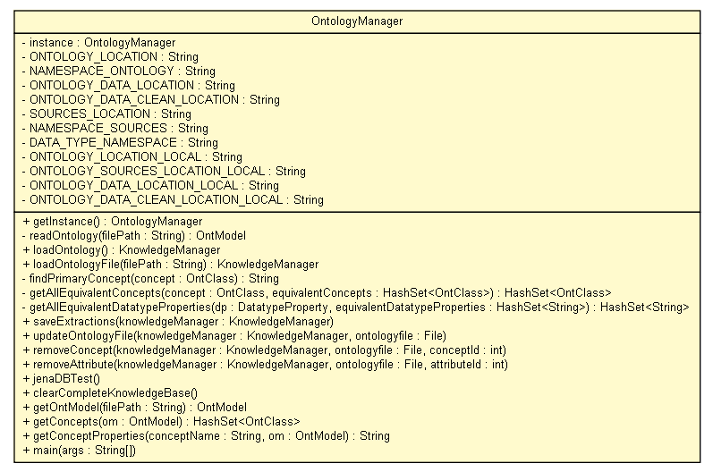

tud.iir.persistence
Class OntologyManager

java.lang.Object
 tud.iir.persistence.OntologyManager
tud.iir.persistence.OntologyManager
public class OntologyManager
- extends java.lang.Object
Read and write the ontology.
| Methods inherited from class java.lang.Object |
clone, equals, finalize, getClass, hashCode, notify, notifyAll, toString, wait, wait, wait |
instance
private static OntologyManager instance
ONTOLOGY_LOCATION
private static final java.lang.String ONTOLOGY_LOCATION
- See Also:
- Constant Field Values
NAMESPACE_ONTOLOGY
private static final java.lang.String NAMESPACE_ONTOLOGY
- See Also:
- Constant Field Values
ONTOLOGY_DATA_LOCATION
private static final java.lang.String ONTOLOGY_DATA_LOCATION
- See Also:
- Constant Field Values
ONTOLOGY_DATA_CLEAN_LOCATION
private static final java.lang.String ONTOLOGY_DATA_CLEAN_LOCATION
- See Also:
- Constant Field Values
SOURCES_LOCATION
private static final java.lang.String SOURCES_LOCATION
- See Also:
- Constant Field Values
NAMESPACE_SOURCES
private static final java.lang.String NAMESPACE_SOURCES
- See Also:
- Constant Field Values
DATA_TYPE_NAMESPACE
private static final java.lang.String DATA_TYPE_NAMESPACE
- See Also:
- Constant Field Values
ONTOLOGY_LOCATION_LOCAL
private static final java.lang.String ONTOLOGY_LOCATION_LOCAL
ONTOLOGY_SOURCES_LOCATION_LOCAL
private static final java.lang.String ONTOLOGY_SOURCES_LOCATION_LOCAL
ONTOLOGY_DATA_LOCATION_LOCAL
private static final java.lang.String ONTOLOGY_DATA_LOCATION_LOCAL
ONTOLOGY_DATA_CLEAN_LOCATION_LOCAL
private static final java.lang.String ONTOLOGY_DATA_CLEAN_LOCATION_LOCAL
OntologyManager
private OntologyManager()
getInstance
public static OntologyManager getInstance()
readOntology
private com.hp.hpl.jena.ontology.OntModel readOntology(java.lang.String filePath)
loadOntology
public KnowledgeManager loadOntology()
- Load the ontology from the standard location.
Instantiate all concepts and properties for the KnowledgeManager.
loadOntologyFile
public KnowledgeManager loadOntologyFile(java.lang.String filePath)
- Load ontology from given location into the KnowledgeManager.
- Parameters:
filePath - The file path.
findPrimaryConcept
private java.lang.String findPrimaryConcept(com.hp.hpl.jena.ontology.OntClass concept)
getAllEquivalentConcepts
private java.util.HashSet<com.hp.hpl.jena.ontology.OntClass> getAllEquivalentConcepts(com.hp.hpl.jena.ontology.OntClass concept,
java.util.HashSet<com.hp.hpl.jena.ontology.OntClass> equivalentConcepts)
getAllEquivalentDatatypeProperties
private java.util.HashSet<java.lang.String> getAllEquivalentDatatypeProperties(com.hp.hpl.jena.ontology.DatatypeProperty dp,
java.util.HashSet<java.lang.String> equivalentDatatypeProperties)
saveExtractions
public void saveExtractions(KnowledgeManager knowledgeManager)
- Store all extracted entities and facts into the owl knowledge base.
- Parameters:
knowledgeManager - The knowledge manager.
updateOntologyFile
public void updateOntologyFile(KnowledgeManager knowledgeManager,
java.io.File ontologyfile)
removeConcept
public void removeConcept(KnowledgeManager knowledgeManager,
java.io.File ontologyfile,
int conceptId)
removeAttribute
public void removeAttribute(KnowledgeManager knowledgeManager,
java.io.File ontologyfile,
int attributeId)
jenaDBTest
public void jenaDBTest()
clearCompleteKnowledgeBase
public void clearCompleteKnowledgeBase()
getOntModel
public com.hp.hpl.jena.ontology.OntModel getOntModel(java.lang.String filePath)
getConcepts
public java.util.HashSet<com.hp.hpl.jena.ontology.OntClass> getConcepts(com.hp.hpl.jena.ontology.OntModel om)
getConceptProperties
public java.lang.String getConceptProperties(java.lang.String conceptName,
com.hp.hpl.jena.ontology.OntModel om)
main
public static void main(java.lang.String[] args)